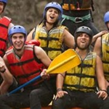

Our purpose is to provide an unforgettable experience of whitewater rafting that is thrilling and safe. Our mission is helping others to have a great adventure, quality time with friends and family, get some exercise, be one with nature, and to feel the pure joy that comes with the experience. Our motto is "Nature's roller coaster, we guide the way".